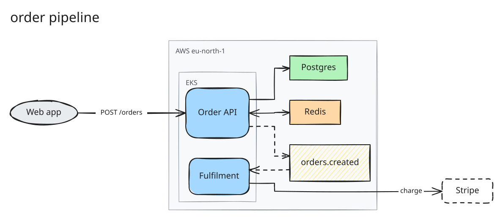
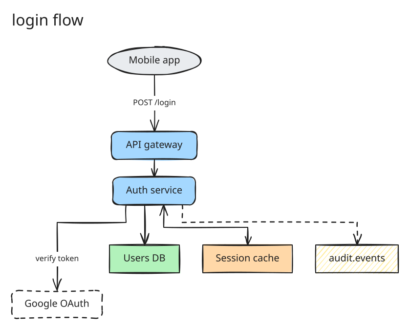

Examples
Four diagrams, each beside the spec that drew it. To keep editing one by hand, download its .excalidraw file and open it on excalidraw.com; the labels and arrow bindings come through intact.
Order pipeline
Left to right, with two nested groups: an EKS cluster inside an AWS region. Two async edges carry an order through a queue to the fulfilment service, and Stripe sits outside every boundary as an external system.

{
"title": "order pipeline",
"direction": "lr",
"groups": [
{ "id": "aws", "label": "AWS eu-north-1" },
{ "id": "k8s", "label": "EKS", "parent": "aws" }
],
"nodes": [
{ "id": "web", "label": "Web app", "kind": "client" },
{ "id": "api", "label": "Order API", "kind": "service", "group": "k8s" },
{ "id": "worker", "label": "Fulfilment", "kind": "service", "group": "k8s" },
{ "id": "q", "label": "orders.created", "kind": "queue", "group": "aws" },
{ "id": "pg", "label": "Postgres", "kind": "datastore", "group": "aws" },
{ "id": "redis", "label": "Redis", "kind": "cache", "group": "aws" },
{ "id": "stripe", "label": "Stripe", "kind": "external" }
],
"edges": [
{ "from": "web", "to": "api", "label": "POST /orders" },
{ "from": "api", "to": "pg" },
{ "from": "api", "to": "redis", "arrows": "both" },
{ "from": "api", "to": "q", "style": "async" },
{ "from": "q", "to": "worker", "style": "async" },
{ "from": "worker", "to": "stripe", "label": "charge" }
]
}Files
- order-pipeline.excalidraw download, then open on excalidraw.com
- order-pipeline.svg for docs and the web
- order-pipeline.png at twice the SVG's size
- order-pipeline.json the spec


The spec is all it takes to regenerate the other three: npx -y excalix render order-pipeline.json.
Login flow
The same vocabulary drawn top to bottom with "direction": "tb", and no groups at all. The auth service fans out to an identity provider, a database, a session cache and an audit queue.

{
"title": "login flow",
"direction": "tb",
"nodes": [
{ "id": "app", "label": "Mobile app", "kind": "client" },
{ "id": "gateway", "label": "API gateway", "kind": "service" },
{ "id": "auth", "label": "Auth service", "kind": "service" },
{ "id": "sessions", "label": "Session cache", "kind": "cache" },
{ "id": "users", "label": "Users DB", "kind": "datastore" },
{ "id": "idp", "label": "Google OAuth", "kind": "external" },
{ "id": "audit", "label": "audit.events", "kind": "queue" }
],
"edges": [
{ "from": "app", "to": "gateway", "label": "POST /login" },
{ "from": "gateway", "to": "auth" },
{ "from": "auth", "to": "idp", "label": "verify token" },
{ "from": "auth", "to": "users" },
{ "from": "auth", "to": "sessions", "arrows": "both" },
{ "from": "auth", "to": "audit", "style": "async" }
]
}Files
- auth-flow.excalidraw download, then open on excalidraw.com
- auth-flow.svg for docs and the web
- auth-flow.png at twice the SVG's size
- auth-flow.json the spec


The spec is all it takes to regenerate the other three: npx -y excalix render auth-flow.json.
Ride-hailing backend
Sixteen nodes, close to the twenty that fit in one picture. A VPC nests inside an AWS account, location updates and finished trips travel as async events, and two externals sit past the right edge. It is wide enough that it scrolls on every screen.
![Hand-drawn diagram titled ride-hailing backend, flowing left to right. A Rider app and a Driver app call CloudFront, which sits with an ALB inside an AWS account group. The ALB calls an API gateway inside a nested VPC group. The gateway calls a Trip service and a Pricing service and sends location updates to a Kinesis stream. A Matching service consumes the stream along a dashed arrow and writes driver locations to Redis, which also receives surge data from the Pricing service. The Trip service writes to Aurora Postgres and publishes trip completed to an SNS topic along a dashed arrow. A Notification service and a Billing worker consume the topic; they push to Firebase and charge Stripe, both drawn as dashed external boxes outside the AWS account.](examples/ride-hailing.svg)
{
"title": "ride-hailing backend",
"direction": "lr",
"groups": [
{ "id": "aws", "label": "AWS account" },
{ "id": "vpc", "label": "VPC", "parent": "aws" }
],
"nodes": [
{ "id": "rider_app", "label": "Rider app", "kind": "client" },
{ "id": "driver_app", "label": "Driver app", "kind": "client" },
{ "id": "cloudfront", "label": "CloudFront", "kind": "service", "group": "aws" },
{ "id": "alb", "label": "ALB", "kind": "service", "group": "aws" },
{ "id": "api_gateway", "label": "API gateway", "kind": "service", "group": "vpc" },
{ "id": "trip_service", "label": "Trip service", "kind": "service", "group": "vpc" },
{ "id": "matching_service", "label": "Matching service", "kind": "service", "group": "vpc" },
{ "id": "pricing_service", "label": "Pricing service", "kind": "service", "group": "vpc" },
{ "id": "notification_service", "label": "Notification service", "kind": "service", "group": "vpc" },
{ "id": "billing_worker", "label": "Billing worker", "kind": "service", "group": "vpc" },
{ "id": "aurora", "label": "Aurora Postgres", "kind": "datastore", "group": "vpc" },
{ "id": "redis", "label": "Redis", "kind": "cache", "group": "vpc" },
{ "id": "kinesis", "label": "Kinesis stream", "kind": "queue", "group": "vpc" },
{ "id": "sns", "label": "SNS topic", "kind": "queue", "group": "vpc" },
{ "id": "firebase", "label": "Firebase", "kind": "external" },
{ "id": "stripe", "label": "Stripe", "kind": "external" }
],
"edges": [
{ "from": "rider_app", "to": "cloudfront" },
{ "from": "driver_app", "to": "cloudfront" },
{ "from": "cloudfront", "to": "alb" },
{ "from": "alb", "to": "api_gateway" },
{ "from": "api_gateway", "to": "trip_service" },
{ "from": "api_gateway", "to": "pricing_service" },
{ "from": "api_gateway", "to": "kinesis", "label": "location updates" },
{ "from": "kinesis", "to": "matching_service", "label": "consume", "style": "async" },
{ "from": "matching_service", "to": "redis", "label": "driver locations" },
{ "from": "pricing_service", "to": "redis", "label": "surge data" },
{ "from": "trip_service", "to": "aurora" },
{ "from": "trip_service", "to": "sns", "label": "trip completed", "style": "async" },
{ "from": "sns", "to": "notification_service", "label": "consume", "style": "async" },
{ "from": "sns", "to": "billing_worker", "label": "consume", "style": "async" },
{ "from": "notification_service", "to": "firebase", "label": "push" },
{ "from": "billing_worker", "to": "stripe", "label": "charge" }
]
}Files
- ride-hailing.excalidraw download, then open on excalidraw.com
- ride-hailing.svg for docs and the web
- ride-hailing.png at twice the SVG's size
- ride-hailing.json the spec

The spec is all it takes to regenerate the other three: npx -y excalix render ride-hailing.json.
Legend
One node of every kind, one group and both edge styles, labelled with their own names. Keep it open while you write a spec.
![Legend diagram of the six node kinds. A client, drawn as a grey ellipse, sends a solid arrow labelled sync to a service, drawn as a blue rounded box. The service sits inside a grey group box labelled a group: what you run, together with a green datastore, a yellow hatched queue and an orange cache. A dashed arrow labelled async runs from the service to the queue, the arrow between service and cache has a head at both ends, and a solid arrow leaves the group for an external system drawn as a dashed outline with no fill.](examples/legend.svg)
{
"title": "legend",
"direction": "lr",
"groups": [{ "id": "yours", "label": "a group: what you run" }],
"nodes": [
{ "id": "client", "label": "client", "kind": "client" },
{ "id": "service", "label": "service", "kind": "service", "group": "yours" },
{ "id": "datastore", "label": "datastore", "kind": "datastore", "group": "yours" },
{ "id": "queue", "label": "queue", "kind": "queue", "group": "yours" },
{ "id": "cache", "label": "cache", "kind": "cache", "group": "yours" },
{ "id": "external", "label": "external", "kind": "external" }
],
"edges": [
{ "from": "client", "to": "service", "label": "sync" },
{ "from": "service", "to": "datastore" },
{ "from": "service", "to": "cache", "arrows": "both" },
{ "from": "service", "to": "queue", "label": "async", "style": "async" },
{ "from": "service", "to": "external" }
]
}Files
- legend.excalidraw download, then open on excalidraw.com
- legend.svg for docs and the web
- legend.png at twice the SVG's size
- legend.json the spec

The spec is all it takes to regenerate the other three: npx -y excalix render legend.json.